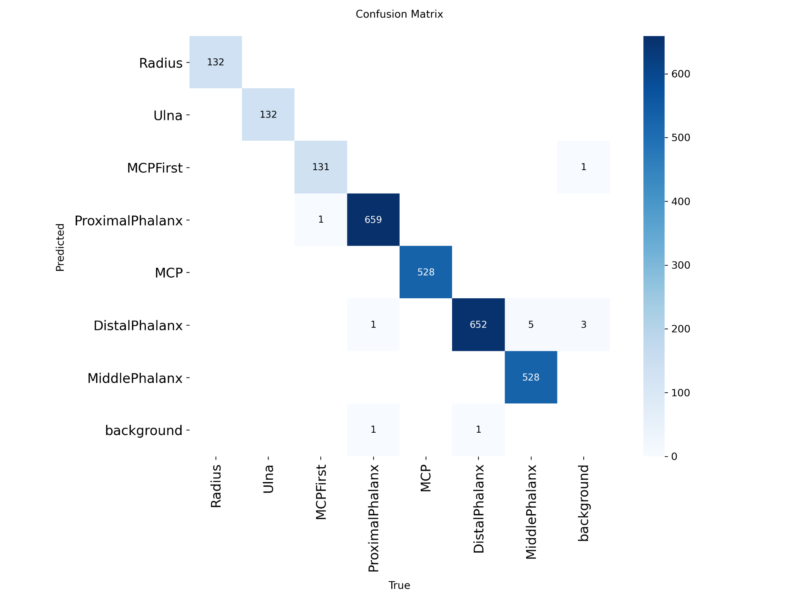
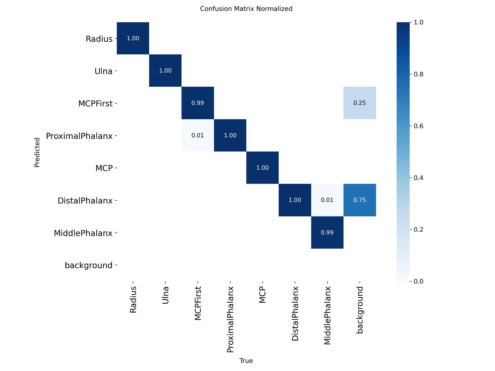

对每一个关节了如指掌
透过混淆矩阵可以清晰地看到：主要关节如 ProximalPhalanx、MCP 与 DistalPhalanx 的分类无与伦比。背景误识别率几乎为零。即使是常常导致干扰的相近解剖部位，也被模型精准地划分开来，毫无混淆。

绝对数量统计，错误预测寥寥无几。

比例归一化，展现多数 1.00 的无暇表现。
基于最新的 YOLOv8 架构，为手部小关节检测带来前所未有的精度与速度。mAP50 达到 99%+，为您提供专业、可靠的医疗 AI 辅助。
透过混淆矩阵可以清晰地看到：主要关节如 ProximalPhalanx、MCP 与 DistalPhalanx 的分类无与伦比。背景误识别率几乎为零。即使是常常导致干扰的相近解剖部位，也被模型精准地划分开来，毫无混淆。

绝对数量统计，错误预测寥寥无几。

比例归一化，展现多数 1.00 的无暇表现。